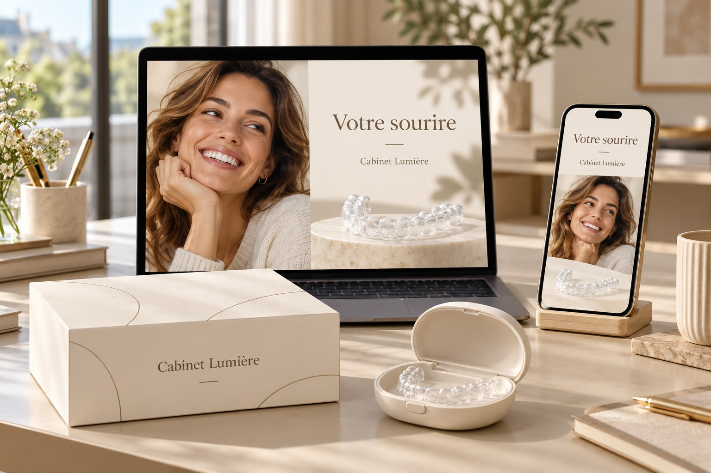

Visibilidad local
Definimos su zona de proximidad, las preguntas de los pacientes y las páginas que conviene destacar. Su web y la información práctica deben ayudar a identificar al interlocutor adecuado.
Dar visibilidad a su oferta. Iniciar una conversación.
Sus futuros pacientes quieren saber a quién acudir, cómo se desarrolla un tratamiento y cómo puede encajar en su vida diaria. Blanche le ayuda a presentar su oferta de alineadores con claridad y bajo la identidad de su clínica.
Preparar mi proyecto ↗Una experiencia coherente desde el primer contenido hasta la solicitud de cita.
Definimos su zona de proximidad, las preguntas de los pacientes y las páginas que conviene destacar. Su web y la información práctica deben ayudar a identificar al interlocutor adecuado.
Páginas específicas, fotografías y formatos breves presentan el recorrido, el papel del profesional y las dudas frecuentes. Los mensajes se preparan con usted y se validan antes de publicarlos.
Una página adaptada al móvil, una opción de contacto visible y respuestas útiles ayudan al paciente a preparar su primera conversación con el equipo.

Su nombre, su tono y su equipo dan coherencia a la experiencia. Los materiales presentan la oferta sin prometer resultados clínicos. Las simulaciones y las imágenes ilustrativas se identifican como tales.
Su actividad, zona, capacidad de atención y objetivos.
Las páginas, los contenidos y el acceso al contacto.
Los materiales validados y las acciones de pago, si se acuerdan.
Las consultas, las citas concertadas y las dificultades del recorrido.
Según las herramientas elegidas: visitas a las páginas específicas, solicitudes de contacto y citas procedentes del dispositivo. Acordamos con usted cómo realizar el seguimiento. El presupuesto publicitario, las herramientas y los servicios incluidos se detallan en la propuesta; no se garantiza un número de pacientes.
Partimos de su situación. Una página específica puede complementar su web; las necesidades de creación o rediseño se valoran al inicio.
Su equipo conserva la relación con el paciente. Preparamos juntos un recorrido acorde con su organización y disponibilidad.
El alcance de los contenidos, las herramientas y las posibles campañas se define mediante presupuesto. La inversión en medios tiene un presupuesto separado, acordado antes del lanzamiento.
Su zona, su presencia actual y sus objetivos: tres puntos para preparar una primera conversación.
Preparar mi proyecto ↗Versión de presentación: el botón abre el resumen del proyecto en la página de inicio. No se envía ninguna solicitud.